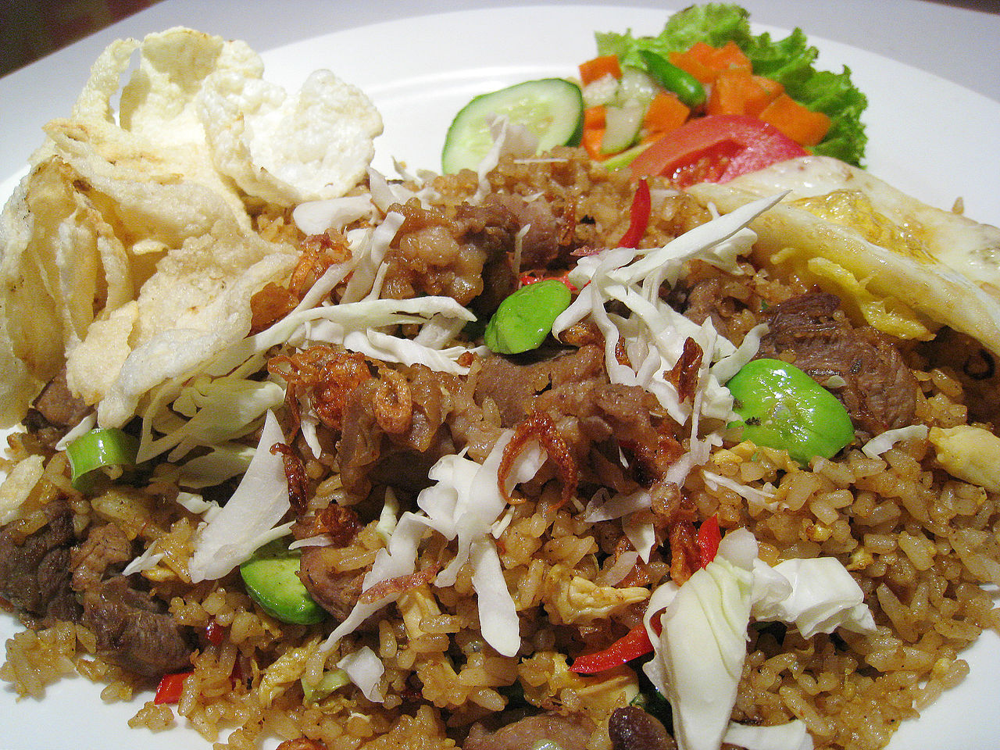

Nasi goreng (English pronunciation: /ˌnɑːsi ɡɒˈrɛŋ/) is a Southeast Asian fried rice dish, usually cooked with pieces of meat and vegetables. One of Indonesia's national dishes.
Nasi goreng has long been considered an important staple of Indonesian cuisine.In 2018, it is officially recognized by the Indonesian government as one of the country's six national dishes.A ubiquitous meal throughout Indonesia, particularly for breakfast, it can be enjoyed in simple versions from a tin plate at a roadside food stall, eaten on porcelain in restaurants, or collected from the buffet tables of dinner parties in urban cities like Jakarta. Premixed packaged seasonings for nasi goreng are widely available for purchase, and microwave-heated frozen versions of nasi goreng may be found in convenience store outlets throughout Indonesia.